Lecture 6: Early Quantum Algorithms I#
Warning
These lecture notes are a work in progress and are not a replacement for watching the lecture video, it’s intended to be a supplementary reading after watching the lecture.
Focus of Lecture#
After this lecture you should be able to:
Get an overview on the landscape of quantum algorithms that will be studied during the rest of the course.
Understand the Fourier transform and what it is used for.
Understand the quantum Fourier transform, how to make its circuit, and how it differs from the classical Fourier transform.
Introduce quantum phase estimation and its circuit.
Study the complexity and performance of quantum phase estimation.
Landscape of Quantum Algorithms#
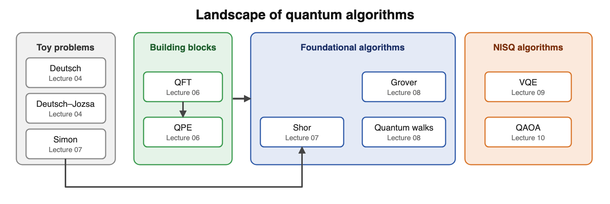
Fig. 40 Landscape of quantum algorithms.#
Fourier Analysis#
Invented by Joseph Fourier in the early 19th century, while studying heat transfer.

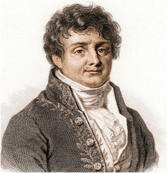
Fig. 41 Joseph Fourier.#
Fourier Analysis
Studies how complex functions can be approximated by sums of sines and cosines.
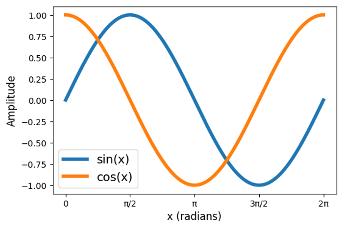
Fig. 42 Sine and cosine plots.#
Wide variety of applications:
Signal processing.
Electronics.
Machine learning.
Time series analysis.
Even quantum mechanics itself!
Fourier Transform: Definition#
Fourier Transform (FT): Converts a function into a representation of its frequency components:
Inverse Fourier Transform (IFT): Reconstructs a function from its frequency domain back to the original time domain:
Fourier Transform: Frequency Composition#
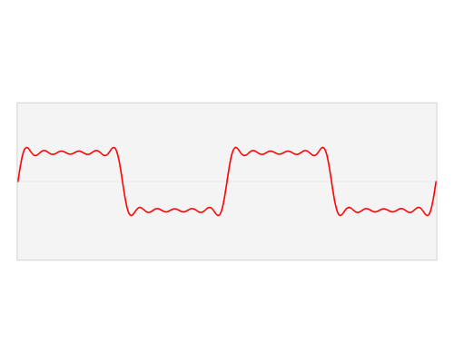
Fig. 43 Fourier transform animation (source: commons.wikipedia.org).#
The function can be expressed by a sum of trigonometric functions.
Note
The Fourier Transform gives us the frequencies of the functions composing the signal.
Remember the Euler formula:
Fourier Transform: Square Function#
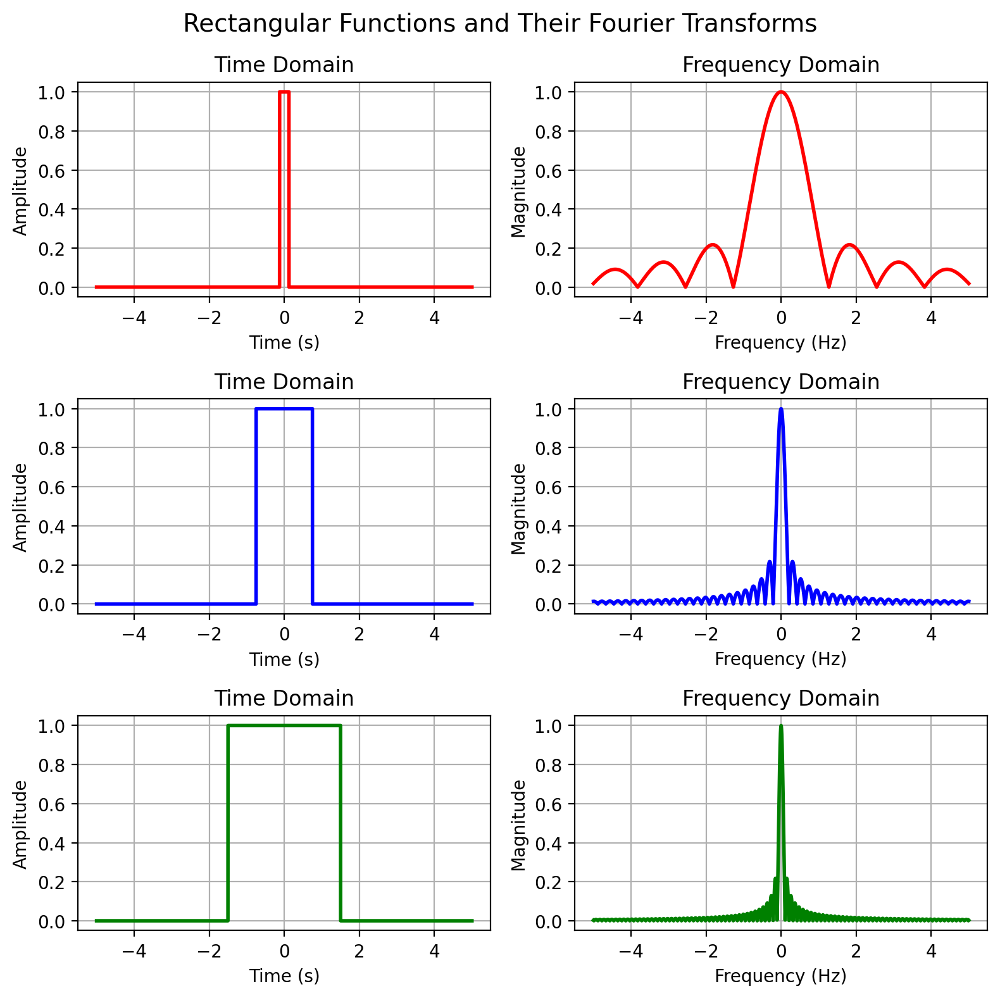
Fig. 44 Fourier transform of different square functions.#
Functions that are narrow in time are spread in frequency and vice versa.
Fourier transforms follow an uncertainty principle similar to Heisenberg’s one in quantum mechanics. A signal can’t be both localised in time and frequency:
Quantum Fourier Transform: Definition#
Discrete Fourier Transform (DFT): Discrete analogue of FT. Transforms a vector of \(N\) complex numbers \((x_0,x_1,\dots,x_{N-1})\in\mathbb{C}\) to a vector \((y_0,y_1,\dots,y_{N-1})\in\mathbb{C}\):
Quantum Fourier Transform (QFT): Converts a basis state \(\ket{j}\) to a superposition of all basis states, weighted by a complex phase encoding frequencies information:
QFT is very similar to DFT, but:
A normalisation term \(\frac{1}{\sqrt{N}}\) appears.
The sign of the exponential is different (it is just a convention).
QFT: Basis States#
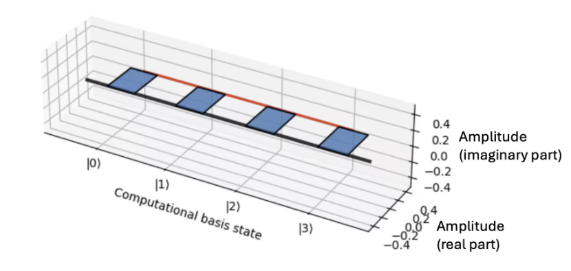
Fig. 45 QFT of state \(\ket{0}\) (source: IBM Quantum Learning).#
\(\textcolor{red}{\text{QFT}\ket{j=0}}\) state produces an uniform superposition of all 4 basis states. All phases are 0.
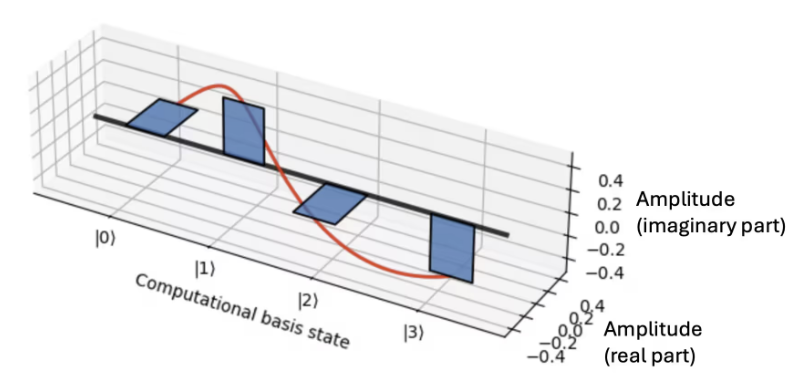
Fig. 46 QFT of state \(\ket{1}\) (source: IBM Quantum Learning).#
\(\textcolor{red}{\text{QFT}\ket{j}}\) will apply a phase increase of \(2\pi jk/N\) to each of the \(\ket{k}=0,1,...,N\) superposed states obtained.
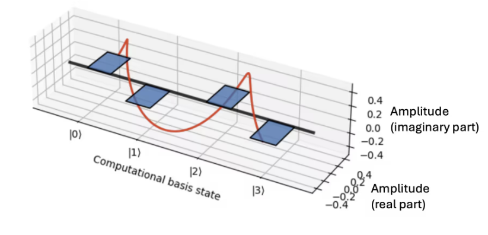
Fig. 47 QFT of state \(\ket{2}\) (source: IBM Quantum Learning).#
As we increase \(\textcolor{red}{\ket{j}}\) the rate of phase change will increase.
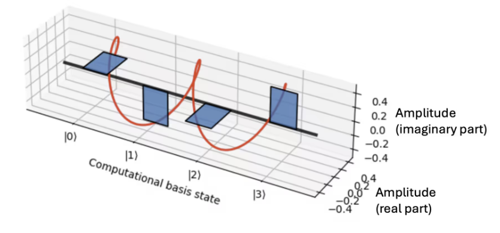
Fig. 48 QFT of state \(\ket{3}\) (source: IBM Quantum Learning).#
Attention
Like in FT, in all cases we see that a narrow signal (the basis vector \(\textcolor{red}{\ket{j}}\)) is spread into a superposition of states, with phases varying with \(\textcolor{red}{j}\).
QFT: General States and Inverse#
For a general state \(\ket{\psi}=\sum_{j=0}^{N-1}x_j\ket{j}\):
The highlighted term is the QFT applied to the basis vectors.
The QFT also has an inverse (IQFT):
Only the sign changes with respect to the QFT.
\(\textcolor{red}{\text{QFT}^\dagger\text{QFT}}\ket{\psi}=\ket{\psi}\). From the previous section: \(\text{QFT}^\dagger\left (\frac{1}{2}\sum_{i=0}^{N-1}\ket{i}\right )=\ket{0}\)
QFT: Product representation I#
Binary representation of a n-qubit basis:
Binary fraction notation:
Hadamard gate in binary fraction notation:
QFT: Product representation II#
Using some algebra we get the product representation of QFT:
Expanding the notation:
Attention
Product representation will help us understanding how the QFT circuit is built!
QFT: Circuit I#
Parameterised version of phase rotation gate:
Controlled phase rotation (\(CR_k\)) gate:
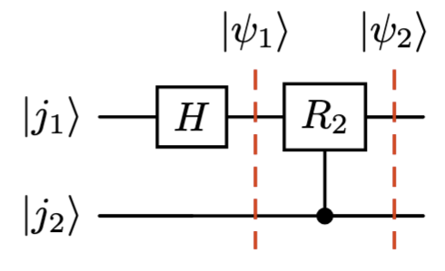
Fig. 49 Building block of the QFT circuit.#
QFT: Circuit II#
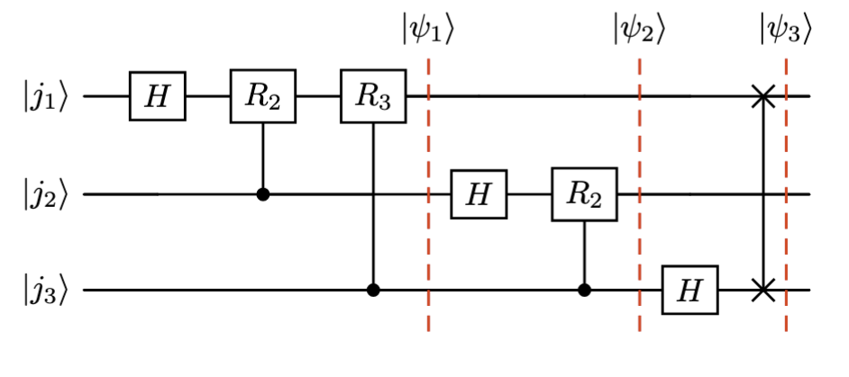
Fig. 50 3 qubit QFT circuit.#
IQFT: Circuit#
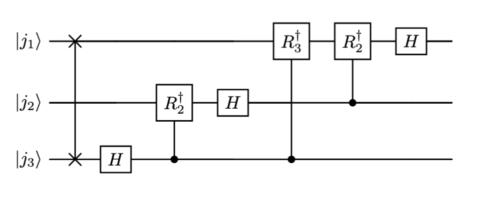
Fig. 51 3 qubit IQFT circuit.#
The order of gates is inverted.
The order of qubits is inverted.
We use the adjoints of the operators.
Hadamard and SWAP are hermitian operators, so they are equal to their adjoints.
QFT and FT#
Quantum Fourier Transform |
Classical Fourier Transform |
|
|---|---|---|
Data |
\(N\) amplitudes held in only \(n = \log N\) qubits |
\(N\) numbers stored explicitly |
Cost |
\(O(\log N \log N)\) gates |
\(O(N \log N)\) operations |
Output |
Cannot read the amplitudes; a measurement returns one \(k\), sampled with probability \(\lvert y_k\rvert^2\) |
Can read all \(N\) values \(y_k\) |
Input |
Need the state \(\sum_j x_j\ket{j}\) already prepared, which can itself be expensive |
Any vector you can write down |
The QFT has better computational complexity in terms of input size, but its speedup only materialises when embedded in a larger quantum algorithm.
Attention
Even though quantum amplitudes are not directly accessible, the QFT plays a central role in powerful quantum algorithms such as Shor’s factoring algorithm and Quantum Phase Estimation (QPE).
Quantum Phase Estimation: Definition#
Initially introduced by Alexei Kitaev in 1995.

Fig. 52 Alexei Kitaev.#
A unitary operator \(U\) has norm-1 eigenvalues:
Quantum Phase Estimation
Quantum Phase Estimation (QPE) tries to estimate \(\phi\).
QPE assumes that:
\(\textcolor{blue}{\ket{u}}\) can be efficiently prepared.
A controlled-\(\textcolor{blue}{U^{2^{t}}}\) gate can be prepared.
This is a reasonable assumption because:
Extracting eigenvalues classically is hard.
Many problems in quantum mechanics and physics involve finding eigenvalues of an operator.
QPE: Circuit Preliminaries I#
A unitary operator \(U\) verifies that:
We can build a controlled version of this gate \(C\text{-}U^{2^t}\) so that:
QPE: Circuit Preliminaries II#
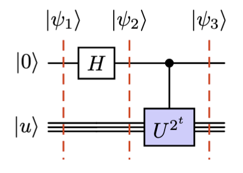
Fig. 53 Building block of the QPE circuit.#
QPE: Circuit I#
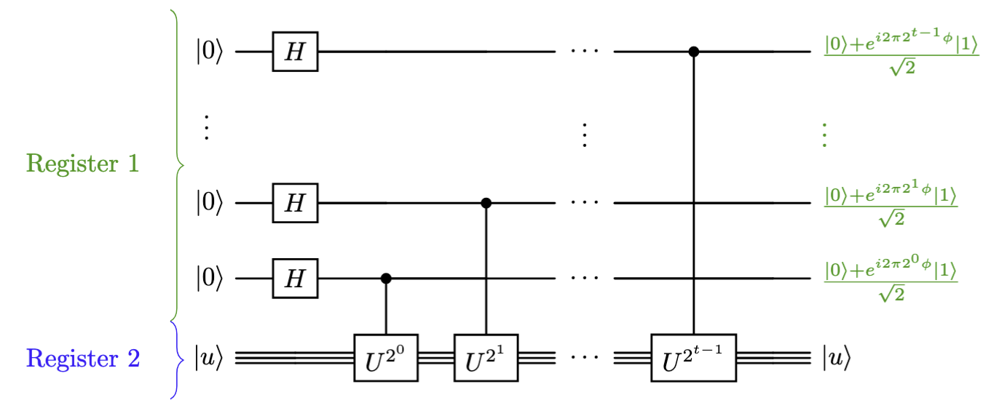
Fig. 54 QPE first step circuit.#
The state of the first register will be:
QPE: Circuit II#
Recalling the binary fraction notation for \(\phi\):
We can rewrite the state of the first register as:
Demonstration. The qubit with the power \(2^k\), for \(k=0,1,\dots,t-1\), is in the state:
Using the binary fraction expansion of \(\phi\), multiplying by \(2^k\) shifts every bit \(k\) places to the left:
We split the sum at \(m=k\). The terms with \(m\leq k\) have a non-negative exponent, so they add up to an integer \(N_k\). The terms with \(m>k\) have a negative exponent, so they are a binary fraction:
Since \(e^{2\pi i N_k}=1\) for any integer \(N_k\), the integer part has no effect on the phase:
Only the bits to the right of the binary point survive, so each qubit keeps a different number of bits of \(\phi\):
Power |
Qubit state |
Bits kept |
|---|---|---|
\(k=t-1\) |
\(\ket{0} + e^{2\pi i \,0.\phi_t}\ket{1}\) |
last bit |
\(k=t-2\) |
\(\ket{0} + e^{2\pi i \,0.\phi_{t-1}\phi_t}\ket{1}\) |
last two bits |
\(\vdots\) |
\(\vdots\) |
\(\vdots\) |
\(k=0\) |
\(\ket{0} + e^{2\pi i \,0.\phi_1\phi_2\cdots\phi_t}\ket{1}\) |
all bits |
Taking the product of the \(t\) qubits, with the \(\frac{1}{\sqrt{2}}\) of each Hadamard giving the global factor \(\frac{1}{2^{t/2}}\), we obtain the expression above. For example, for \(t=3\):
This derivation assumes that \(\phi\) can be written exactly with \(t\) bits.
This is the QFT acting on \(\phi = 0.\phi_1\phi_2\cdots\phi_t\)
Quantum Phase Estimation
Applying the inverse QFT to the first register yields \(\ket{\phi_1\phi_2\cdots\phi_t}\), and therefore the desired eigenvalue.
QPE: Circuit III#

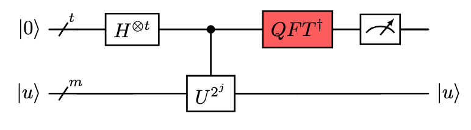
Fig. 55 QPE full circuit.#
QPE: Complexity and performance I#
If \(\phi\) can be exactly expressed as a binary fraction, QPE yields the correct result 100% of the time. For example, \(\phi=\tfrac{3}{8} = \tfrac{0}{2}+\tfrac{1}{4}+\tfrac{1}{8}\), so QPE outputs \(\ket{011}\) with probability = 1.
If \(\phi\) can’t be exactly expressed as a binary fraction, e.g. \(\phi = \tfrac{1}{6}=0.16666...\), it has a repeating binary expansion \(\tfrac{1}{6} = 0.00\overline{10}\ldots\) that never terminates. QPE outputs the closest value to \(\phi\) with probability \(\textcolor{green}{\geq\frac{4}{\pi^{2}}\approx 0.40}\).
Increasing the number of qubits in the first register improves the approximation:
\(t\) qubits |
Best approximation of \(\tfrac{1}{6}\) |
Error |
|---|---|---|
3 |
\(\tfrac{1}{8} = 0.125\) |
\(0.042\) |
4 |
\(\tfrac{3}{16} = 0.1875\) |
\(0.021\) |
5 |
\(\tfrac{5}{32} = 0.15625\) |
\(0.010\) |
QPE: Complexity and performance II#
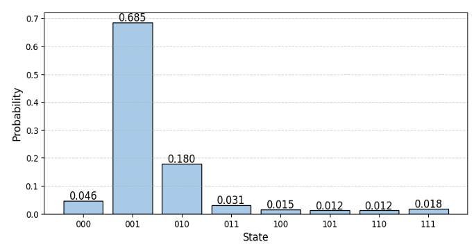
Fig. 56 Result of QPE for an eigenvalue of 1/6.#
For \(\phi = \tfrac{1}{6}=0.166...\) we obtain the result \(\alpha=\ket{001}\) with highest probability (higher than \(\frac{4}{\pi^{2}}\)).
To estimate \(\phi\) to \(n\) bits of precision with failure probability at most \(\varepsilon\), the number of qubits \(t\) in the first register is given by:
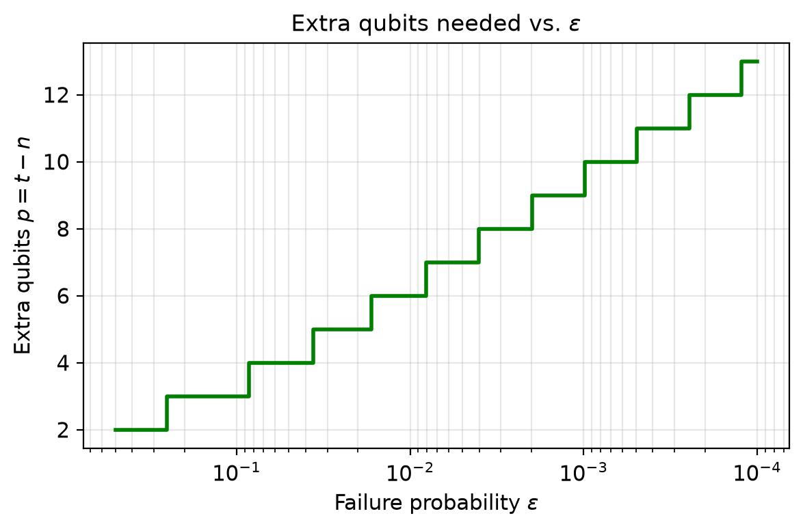
Fig. 57 Extra qubits needed to reach a given failure probability.#
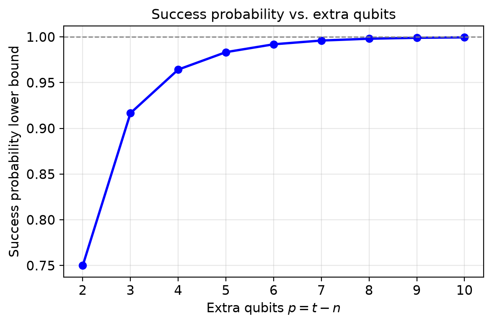
Fig. 58 Success probability vs. extra qubits.#
QPE: Why it matters#
Comparison to classical: estimating eigenvalues of an \(N\times N\) unitary classically requires resources that scale with \(N=2^{n}\), whereas QPE needs only \(O(n)\) qubits and a number of controlled-\(U\) calls that is polynomial in \(n\), an exponential advantage whenever \(U\) can be implemented efficiently.
Apart from having many applications of its own, QPE is a core subroutine that powers many of the most important quantum algorithms, e.g.:
Shor’s algorithm for factoring.
Quantum chemistry and material sciences.
Solving linear systems (HHL algorithm).
Quantum walk and search algorithms.
Wrap-up#
The Fourier Transform decomposes a function into its frequency components, trading localisation in time for localisation in frequency.
The Quantum Fourier Transform (QFT) is the quantum analogue of the Discrete Fourier Transform, computable with exponentially fewer operations than the classical FFT, though its amplitudes cannot be read out directly.
Quantum Phase Estimation (QPE) uses the QFT to estimate the eigenvalue phase \(\phi\) of a unitary operator \(U\).
QPE and QFT are a core subroutine underlying many of the most important quantum algorithms, such as Shor’s algorithm, quantum chemistry simulation, and the HHL algorithm for linear systems.